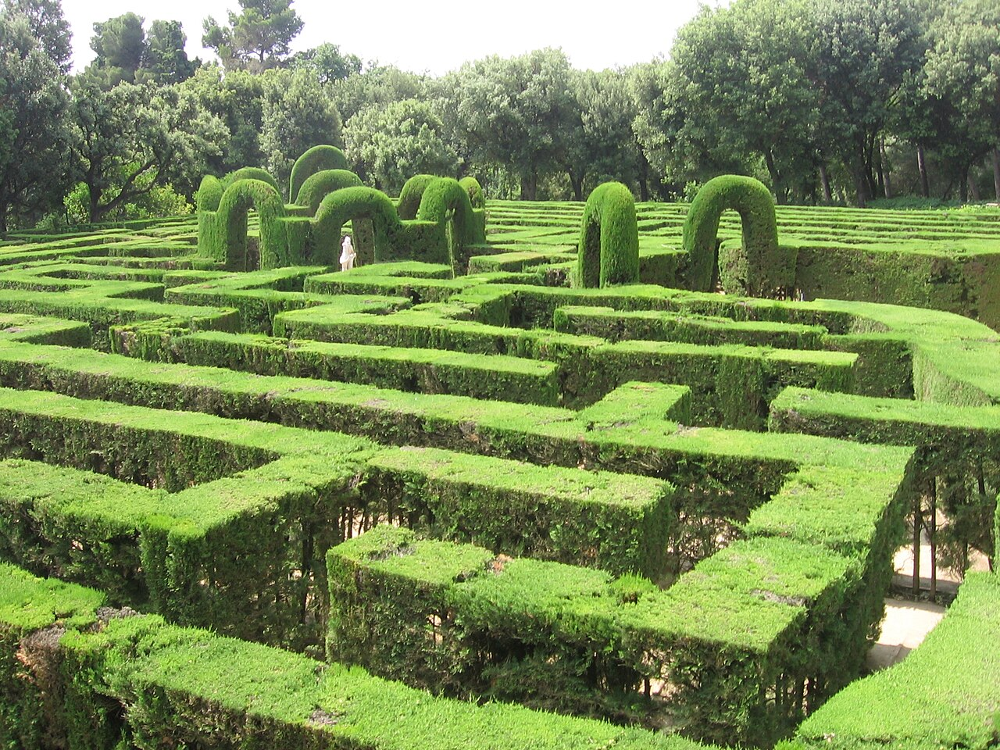

El Laberinto de Horta: Ruta Gratis de Mañana en el Jardín más Antiguo de Barcelona
Olvida las prisas y dedica una mañana completa a descubrir el jardín histórico más antiguo que se conserva en Barcelona (1791): un laberinto de cipreses, templetes italianos, grutas mitológicas y un almuerzo de barrio en la Plaça d'Eivissa.

Un jardín neoclásico de 1791 escondido a los pies de la sierra de Collserola
Mientras el Park Güell o la Ciutadella reciben miles de visitantes cada hora, en la falda de la sierra de Collserola se esconde el jardín histórico más antiguo que conserva Barcelona: el Parc del Laberint d'Horta. Su historia comenzó en 1791, cuando Joan Antoni Desvalls, marqués de Llupià y hombre ilustrado apasionado por la mitología clásica, encargó al arquitecto italiano Domenico Bagutti diseñar un jardín neoclásico alrededor de su torre señorial de veraneo.
Lo fascinante de dedicarle una mañana entera a este jardín histórico es que el recinto combina dos mundos completamente distintos en una misma colina: en la parte inferior se despliega un jardín neoclásico italiano del siglo XVIII, geométrico, luminoso y lleno de esculturas mitológicas sobre el amor; y a medida que subes hacia el bosque, el trazado se transforma en un jardín romántico del siglo XIX lleno de sombra, acequias, puentes rústicos y cascadas de roca.
Nada más cruzar los tornos de entrada te recibirá la silueta arabesca y neogótica de la Torre Soberana (el antiguo palacio de la familia Desvalls cubierto de hiedra) y el encantador Jardín Doméstico o de los Bojes, presidido por camelias centenarias y parterres de flores que marcan el inicio de la subida.
El corazón del plan: perderse en el Laberinto de Cipreses y subir a los Templetes
Subiendo la primera escalinata llegas al plato fuerte de la mañana: el laberinto vegetal formado por 750 metros lineales de cipreses recortados de más de dos metros de altura. En la entrada del laberinto, un relieve de mármol muestra a Ariadna entregando a Teseo el ovillo de hilo para no perderse, y si logras llegar hasta el corazón del trazado encontrarás la estatua original de Eros en una pequeña plazoleta circular con bancos de piedra.
Al salir por el extremo superior del laberinto se abre la segunda gran terraza, posiblemente el rincón más fotogénico y sereno de toda Barcelona. A ambos lados se alzan dos templetes de estilo italiano con cúpulas y columnas toscanas que cobijan las estatuas de Artemisa y Dánae, unidos por un paseo desde el que se contempla desde arriba todo el dibujo geométrico del laberinto con el mar Mediterráneo al fondo.
Justo debajo de la gran escalinata que conduce al tercer nivel, no pases de largo la Gruta del Eco y Narciso: una cueva artificial de piedra porosa y helechos por donde corre el agua sobre una inscripción en latín que resume el espíritu de todo el jardín.
El Pabellón de Carlos IV, el gran estanque y el ascenso por la Cascada Romántica
Coronando la parte neoclásica del parque encontrarás el elegante Pabellón de Carlos IV —levantado para conmemorar la visita de los reyes en 1802—, que se refleja sobre un gran estanque cuadrado rodeado de bosques de encinas y pinos. Detrás del pabellón se esconde el silencioso Jardín de los Musgos y la fuente de la ninfa Egeria, donde la temperatura baja varios grados incluso en los días más soleados.
Desde aquí, en lugar de dar la vuelta por el mismo sitio, toma el sendero lateral que se adentra en la ampliación romántica de mediados del siglo XIX. El camino desciende en paralelo a un canal de agua que salta entre rocas naturales cubiertas de hiedra hasta formar la gran Cascada Romántica, rodeada de agapantos, lirios y falsos troncos de piedra que buscaban recordar la fugacidad del tiempo.
Para redondear la mañana: el Velódromo de Horta y vermut en la Plaça d'Eivissa
Al salir del parque por el Passeig dels Castanyers, detente cinco minutos justo al lado del Velódromo de Horta para ver al aire libre el famoso 'Poema Visual Transitable en Tres Tiempos' del poeta Joan Brossa: una enorme letra 'A' de piedra de doce metros de altura que se atraviesa caminando sobre la hierba.
Después, baja paseando diez minutos hacia el corazón del antiguo pueblo de Horta hasta desembocar en la Plaça d'Eivissa. A diferencia del centro turístico de Barcelona, esta plaza arbolada conserva intacta su alma de barrio, con el histórico Quimet d'Horta (famoso desde 1927 por sus chapatas y su colección de botellas) y terrazas tranquilas donde pedir un vermut de grifo al sol antes de entrar en la boca de Metro de Horta (L5) que está en la misma plaza.
Preguntas frecuentes
¿Qué días es gratis el Parque del Laberinto de Horta?
La entrada al Parc del Laberint d'Horta es completamente gratuita todos los miércoles y todos los domingos del año. El resto de la semana cuesta 2,23 € (1,42 € entrada reducida).
¿Cuál es la parada de Metro más cercana al Laberinto de Horta?
La parada Mundet de la Línea 3 (verde) es la más cercana: saliendo por el acceso del Velódromo apenas hay que caminar 5 minutos por el Passeig dels Castanyers hasta la puerta del jardín.